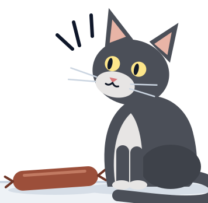

Предприемачество: динамика, продуктивност и бариери за навлизане на пазарите
Икономически основи на бизнеса · НБУ
доц. д-р Виктор Аврамов
2026-09-30
€20 на тротоара
Студент: „Вижте, 20 евро на тротоара!“
Икономист: „Невъзможно. Ако бяха истински, някой вече щеше да ги е взел“
„Предприемачът е този, който ги взима“
Колко оцеляват?
От 100 нови фирми в България колко са живи след пет години?
Седем въпроса от мястото на предприемача
- 1Кой е предприемачът?
- 2Къде отива талантът?
- 3Струва ли си да се навлезе на един пазар?
- 4На кой пазар?
- 5Какво ще направят заварените играчи?
- 6Как новите участници все пак навлизат?
- 7Защо трябва да се занимаваме с това?
1 · Кой е предприемачът?
- 1Кой е предприемачът?сега
- 2Къде отива талантът?
- 3Струва ли си да се навлезе на един пазар?
- 4На кой пазар?
- 5Какво ще направят заварените играчи?
- 6Как новите участници все пак навлизат?
- 7Защо трябва да се занимаваме с това?
Три идеи за предприемачестввото
Шумпетер · иноваторът
Нови комбинации, които изместват старите („creative destruction“).

Кирцнер · откривателят
Вижда възможности, които другите пропускат.
Найт · носителят на несигурност
Печалбата е награда за риск, който не може да се застрахова.
Baumol, Litan & Schramm (2007): предприемач е всеки, нов или съществуващ, който предлага нов продукт или услуга или въвежда по-евтин начин да произвежда и доставя съществуващите.
Какъв тип е всеки?
- Шофьор в Bolt вечер след работа
- Служител в банка, който създава нов продукт
- Франчайз на верига кафенета
- Основател на стартъп
- по възможност / по необходимост
- предприемач / предприемач в организацията
- иновация / копиране
2 · Къде отива талантът?
- 1Кой е предприемачът? (минали)
- 2Къде отива талантът?сега
- 3Струва ли си да се навлезе на един пазар?
- 4На кой пазар?
- 5Какво ще направят заварените играчи?
- 6Как новите участници все пак навлизат?
- 7Защо трябва да се занимаваме с това?
Три вида предприемачество
| Вид | Какво прави | Пример |
|---|---|---|
| + Продуктивно | създава стойност | нов продукт, по-евтин процес |
| = Непродуктивно | преразпределя стойност | лобиране, заобикаляне на правила |
| − Разрушително | унищожава стойност, може да е незаконно | неморално, непродуктивно |
„Талантът е общо взето константен. Правилата решават къде отива.“
Baumol (1990).
Имперски Китай
В имперски Китай най-способните не отиват в бизнеса, а на изпитите за държавни чиновници.
Къде отиват най-способните у нас днес?

Продуктивно, непродуктивно или разрушително?
Помислете за всеки случай: П — продуктивно · Н — непродуктивно · Р — разрушително
1 Софтуерна компания, създадена в София и продадена на глобален инвеститор (Telerik)
2 Фирма, която печели почти всяка обществена поръчка в своята община
3 Консултант, който „оптимизира“ проекти по европейски програми
4 Телефонни измамници, които звънят на пенсионери
5 Браншова организация, която лобира за нов лиценз за дейността
6 Данъчен консултант, който помага на фирми законно да плащат по-малко данъци
7 Приложение, което сравнява цените в супермаркетите
8 Фирма, която купува патенти само за да съди производители
3 · Струва ли си да се навлезе на един пазар?
- 1Кой е предприемачът? (минали)
- 2Къде отива талантът? (минали)
- 3Струва ли си да се навлезе на един пазар?сега
- 4На кой пазар?
- 5Какво ще направят заварените играчи?
- 6Как новите участници все пак навлизат?
- 7Защо трябва да се занимаваме с това?
Колко оцеляват?
survival = {
const rows = bd.filter((d) => d.indicator === "survival_5y");
const years = d3.intersection(...["BG", "EU27_2020"].map((g) => rows.filter((d) => d.geo === g).map((d) => d.year)));
const year = d3.max(years);
const pick = rows.filter((d) => d.year === year)
.map((d) => ({ ...d, label: d.geo === "BG" ? "България" : "ЕС-27" }))
.sort((a, b) => (a.geo === "BG" ? -1 : 1));
return { year, rows: pick, dataset: pick[0]?.dataset };
}Plot.plot({
width: phone ? 350 : 540,
height: phone ? 190 : 270,
marginLeft: phone ? 76 : 104,
marginRight: phone ? 44 : 56,
marginTop: 40,
marginBottom: 44,
style: { fontFamily: font, fontSize: phone ? "12px" : "17px", color: C.ink },
ariaLabel: "Петгодишна преживяемост на новите фирми",
ariaDescription: `През ${survival.year} г. след пет години са живи ${survival.rows.map((d) => `${d.label}: ${pct(d.value / 100)}`).join("; ")}.`,
x: { domain: [0, 100], ticks: [0, 25, 50, 75, 100], tickFormat: (d) => `${d}%`, label: "живи след 5 години →" },
y: { label: null, domain: survival.rows.map((d) => d.label), tickSize: 0 },
marks: [
Plot.barX(survival.rows, { x: "value", y: "label", fill: (d) => (d.geo === "BG" ? C.market : C.marketLight), insetTop: 8, insetBottom: 8 }),
Plot.text(survival.rows, { x: "value", y: "label", text: (d) => pct(d.value / 100), dx: 8, textAnchor: "start", fontWeight: 600, fontSize: phone ? 13 : 19, fill: C.ink }),
Plot.ruleX([0], { stroke: C.ink }),
Number.isFinite(guess) ? Plot.ruleX([guess], { stroke: C.ink, strokeWidth: 2.5, strokeDasharray: "7 5" }) : null,
Number.isFinite(guess) ? Plot.text([guess], { x: (d) => d, frameAnchor: "top", dy: -24, text: (d) => `Вашата прогноза: ${num(d)}%`, fontWeight: 600, fontSize: phone ? 12 : 17, fill: C.ink }) : null,
],
})Plot.plot({
width: phone ? 350 : 500,
height: phone ? 210 : 300,
marginLeft: 44,
marginRight: phone ? 76 : 100,
marginTop: 42,
style: { fontFamily: font, fontSize: phone ? "11px" : "15px", color: C.ink },
ariaLabel: "Раждания плюс закривания на фирми, България и ЕС-27",
ariaDescription: "Сборът на дела на новите и на закритите фирми, в процент от активните, по години. Редът прекъсва между 2020 и 2021 г., защото Евростат сменя методологията.",
x: { label: null, tickFormat: (d) => String(d), ticks: [2010, 2015, 2020, 2024] },
y: { domain: [0, 30], label: "↑ раждания + закривания, % от активните", grid: true },
marks: [
Plot.ruleX([2020.5], { stroke: C.muted, strokeDasharray: "4 4" }),
Plot.text([2020.5], { x: (d) => d, frameAnchor: "top", dy: -14, text: () => "нова методология →", textAnchor: "start", dx: -4, fill: C.muted, fontSize: phone ? 10 : 13 }),
Plot.line(churn, { x: "year", y: "value", z: (d) => d.geo + d.series, stroke: (d) => (d.geo === "BG" ? C.market : C.marketLight), strokeWidth: 2.5 }),
Plot.dot(churn, { x: "year", y: "value", fill: (d) => (d.geo === "BG" ? C.market : C.marketLight), r: 3 }),
Plot.text(churnEnds, { x: "year", y: "value", text: "label", dx: 8, textAnchor: "start", fill: (d) => (d.geo === "BG" ? C.market : C.muted), fontWeight: 600 }),
],
})churn = bd.filter((d) => d.indicator === "churn" && d.year >= 2008)
churnEnds = ["BG", "EU27_2020"].map((g) => {
const last = d3.greatest(churn.filter((d) => d.geo === g), (d) => d.year);
return { ...last, label: g === "BG" ? "България" : "ЕС-27" };
})
bd = FileAttachment("data/eurostat_bd.csv").csv({ typed: true })Plot = import("https://cdn.jsdelivr.net/npm/@observablehq/plot@0.6.17/+esm")
import { criticalLoss, profitChange, lossVerdict, entryOutcome, entrantAverageCost, flippersLeft, FLIPPERS } from "./lib/models.js"
import { pct, num, eur } from "./lib/format.js"
C = ({ entrant: "#0F766E", incumbent: "#B45309", market: "#475569", marketLight: "#94A3B8", profit: "#15803D", loss: "#B91C1C", ink: "#1a1a2e", muted: "#666666", line: "#d1d5db" })
phone = Generators.observe((notify) => {
const update = () => notify(document.documentElement.classList.contains("phone"));
update();
window.addEventListener("decklayout", update);
return () => window.removeEventListener("decklayout", update);
})
font = "Inter, Segoe UI, Helvetica Neue, Arial, sans-serif"
setInput = (input, value) => { input.value = value; input.dispatchEvent(new Event("input", { bubbles: true })); }около 4 от 10 нови фирми в България оцеляват пет години — близо до средното за ЕС.
Струва ли си финансово?
- „Медианният предприемач печели по-малко, отколкото би печелил като нает.“ (Hamilton 2000)
- „Но печалбите са крайно неравни: малцина печелят много“
- „Оцелелите: 225 млн. души хвърлят монета. След 20 рунда около 215 са познали всеки път — и пишат книги за историята си.“ (Buffett 1984)
{
const n = flippersLeft(k);
const share = n / FLIPPERS;
const caption = k === 20 ? "215 „гении“ с 20 поредни ези" : k === 0 ? "души хвърлят монета" : `още познават всеки път след ${k} ${k === 1 ? "рунд" : "рунда"}`;
return html`<div class="flip" role="img" aria-label="${num(n)} ${caption}">
<div class="flip-track"><div class="flip-bar" style="width:${Math.max(share * 100, 0.6)}%"></div></div>
<p class="flip-n">${num(n)}</p>
<p class="flip-cap">${caption}</p>
</div>`;
}при достатъчно много играчи някой печели всеки път по чиста случайност — и после обяснява успеха си с метод.
Кой всъщност става предприемач?
Семейство
Децата на предприемачи по-често стават предприемачи.
Капитал
Наследство или печалба от лотария повишават шанса да се стартира нов бизнес.
Опит
Повечето основатели започват в бранша, в който вече са работили.
„Умни и непослушни“
Успешните основатели имат по-високи резултати на тестове за способности и повече нарушени правила като тийнейджъри.
4 · На кой пазар?
- 1Кой е предприемачът? (минали)
- 2Къде отива талантът? (минали)
- 3Струва ли си да се навлезе на един пазар? (минали)
- 4На кой пазар?сега
- 5Какво ще направят заварените играчи?
- 6Как новите участници все пак навлизат?
- 7Защо трябва да се занимаваме с това?
Къде минава границата на пазара?
Двете грешки на основателите: „целият пазар на храни е наш“ и „нямаме конкуренти“.
Физическа
Докъде стига стоката.
Електроенергия: пазарните зони и междусистемните връзки.
Регулаторна
Какво казва законът.
Лицензите за таксиметров превоз в София.
Икономическа
Какво клиентът смята за заместител.
Верига от заместители: такситата в София
Кои от тях са на пазара на таксиметрови услуги в София?
TaxiMe метро тротинетка под наем градски транспорт собствен автомобил
Тест на хипотетичния монополист
- Започваме с най-тесния кандидат-пазар: капучиното в кафенетата около НБУ.
- Представяме си един собственик на всички тях.
- Може ли трайно да вдигне цената с 5–10% и да спечели?
- Не → клиентите бягат към заместители → разшири пазара и повтори. Да → това е пазарът.
Колко клиенти можеш да се загубят?
КЗ = X / (X + M)
{
const good = clState === "profit";
const fill = good ? C.profit : C.loss;
const chart = Plot.plot({
width: phone ? 350 : 520,
height: phone ? 140 : 200,
marginLeft: 16,
marginRight: 28,
marginTop: 52,
marginBottom: 52,
style: { fontFamily: font, fontSize: phone ? "12px" : "18px", color: C.ink },
ariaLabel: "Очаквана загуба на клиенти спрямо критичната загуба",
ariaDescription: `Очаквана загуба ${pct(L / 100, { min: 0, max: 0 })}, критична загуба ${pct(cl)}: ${clText}.`,
x: { domain: [0, 0.6], ticks: [0, 0.1, 0.2, 0.3, 0.4, 0.5, 0.6], tickFormat: (d) => pct(d, { min: 0, max: 0 }), label: "клиенти, които си тръгват →" },
y: { axis: null, domain: ["L"] },
marks: [
Plot.barX([L / 100], { x: (d) => d, y: () => "L", fill, insetTop: 6, insetBottom: 6 }),
Plot.ruleX([cl], { stroke: C.ink, strokeWidth: 3 }),
Plot.text([cl], { x: (d) => d, frameAnchor: "top", dy: -30, text: (d) => `КЗ = ${pct(d)}`, fontWeight: 600, fontSize: phone ? 13 : 17, fill: C.ink }),
Plot.ruleX([0], { stroke: C.ink }),
],
});
return html`<div class="cl-row">${chart}<p class="verdict ${clState}" id="cl-verdict">${clText}</p></div>`;
}колкото по-голяма е разликата между приходи и разходи, толкова по-малко клиенти можеш да си позволиш да загубиш.
Каква е цената на безплатното?
- FTC срещу Meta (ноември 2025): FTC твърди, че пазарът е само Facebook, Instagram, Snapchat и MeWe. Съдът добавя TikTok и YouTube — и Meta не е монополист.
- При безплатен продукт „цената“ е качеството: повече реклами, по-малко поверителност. Потребителите плащат с време.
- Естествен експеримент: Индия забранява TikTok (2020) и времето във Facebook расте с над 60%, а в Instagram почти се удвоява.
според съда
според FTC
Facebook Instagram Snapchat MeWe
TikTok YouTube
■ приложения на Meta (заварен играч)
Ако Instagram удвои рекламите, къде отиваш?
Бариери за навлизане
Вярно или невярно? „Български пощи“ има законов монопол. Невярно.
| Бариера | Пример |
|---|---|
| Икономии от мащаба | електропреносната мрежа (естествен монопол) |
| Невъзвратими разходи | рафинерия, телекомуникационна мрежа |
| Мрежови ефекти | Viber — там са всички |
| Регулация и лицензи | такситата; лобито от слайд 9 |
| Контрол върху ключов ресурс | рафинерия, пристанищен терминал |
Лукойл: доминиращ, но не естествен монопол
- КЗК: „Лукойл-България“ е лидер в търговията на едро с автомобилни горива с дял между 40% и 60%.
- Октомври 2025: санкции на САЩ. 14 ноември 2025: правителството назначава особен търговски управител.
Ако собственикът трябва да излезе, по-лесно ли е навлизането? Къде са тесните места?
Колко фирми стигат за конкуренция?
Колко аптеки трябват на един малък град, за да паднат цените?
1 2 3 5+
Повечето промяна идва с втората и третата фирма. Следващите променят малко.
Bresnahan & Reiss (1991)
Играта на навлизане
Вие сте заварен играч. Новият вече е влязъл. Борите ли се за запазване на пазарния дял или допускате навлизане на нов участник?
(печалби: предприемач, заварен)
1. Завареният сравнява 2 и 6 → допуска.
2. Предприемачът сравнява 0 и 5 → влиза.
„Заплахата не е достоверна.“
Doomsday device
Преди новия играч завареният може да построи допълнителен капацитет на цена 3. Платен веднъж, той прави борбата евтина; ако стои неизползван, е чист разход.
(печалби: предприемач, заварен) горният клон е решен на слайд 26
1. С капацитет борбата е по-изгодна (5 > 3): заплахата е достоверна.
2. Новият остава вън (0 > −1).
3. Завареният печели 7 вместо 6 → строи.
4. Таен капацитет: новият влиза, завареният се бори и получава 5 — по-малко, отколкото без капацитет.
„Ангажиментът работи само ако е видим и необратим.“
Репутация: 20 града, 20 предприемачи
- Верига магазини среща нов играч във всеки от 20 града, един след друг.
- Ако мислим отзад напред: в град 20 допусни, следователно и в 19… и така навсякъде.
- Реалните заварени играчи се съпротивляват на навлизането отрано. Защо?
Задържане на клиенти
Договори за 24 месеца — и преносимостта на номера, с която регулаторът сваля бариерата.
Приложения за лоялност на веригите.
Viber: оставаш, защото всички са там.
Google плаща, за да е търсачката по подразбиране (САЩ срещу Google, 2024).
Одит за една минута: при смяна на телефон (iOS ↔︎ Android), банка и мобилен оператор — кое ще ти струва най-много: пари, време, данни или приятели?
6 · Как новите участници все пак навлизат?
- 1Кой е предприемачът? (минали)
- 2Къде отива талантът? (минали)
- 3Струва ли си да се навлезе на един пазар? (минали)
- 4На кой пазар? (минали)
- 5Какво ще направят заварените играчи? (минали)
- 6Как новите участници все пак навлизат?сега
- 7Защо трябва да се занимаваме с това?
Три пътя покрай бариерата
1
Остани малък
Влез толкова малък, че да не си струва да те атакуват („джудо икономика“).
Нискотарифни авиолинии
2
Заобиколи
TikTok не се бори с мрежата от приятели на Facebook. Revolut влиза с един продукт и европейска локация.
3
Сътрудничи
Лиценз, партньорство или продажба на заварения играч.
Telerik, продадена на Progress (2014).
Компасът на предприемаческата стратегия
Контролирай ↑
Архитектурна стратегияконкурирай + контролирай
Интелектуална собственостсътрудничи + контролирай
Разрушителна иновацияконкурирай + изпълнявай
Верига на стойносттасътрудничи + изпълнявай
Изпълнявай бързо ↓
← Конкурирай се
Сътрудничи →
По Gans, Scott & Stern (2018). Осите: отношение към заварените играчи и контрол върху идеята.
7 · Защо трябва да се занимаваме с това?
- 1Кой е предприемачът? (минали)
- 2Къде отива талантът? (минали)
- 3Струва ли си да се навлезе на един пазар? (минали)
- 4На кой пазар? (минали)
- 5Какво ще направят заварените играчи? (минали)
- 6Как новите участници все пак навлизат? (минали)
- 7Защо трябва да се занимаваме с това?сега
Бариерите пазят непроизводителните
- В търговията на дребно в САЩ през 90-те почти целият ръст на производителността идва от нови, по-производителни обекти, които изместват излизащите (Foster, Haltiwanger & Krizan 2006).
- У нас: веригите изместиха кварталните магазини. Това е по-производително, но днес спорът е за пазарна сила.
Бариерите пазят не само печалбите на заварените, а и ниската им производителност.
Накрая
През 2025 г. бюджетната комисия на парламента одобри идея за държавна верига магазини само с български продукти и надценка до 10%.
- Би ли дисциплинирала цените?
- На кои бариери от днешната лекция ще се натъкне?
Източници
Baumol (1990) · Baumol, Litan & Schramm (2007) · Bhidé (2000) · Bresnahan & Reiss (1991) · Buffett (1984) · Camerer & Lovallo (1999) · Cooper, Woo & Dunkelberg (1988) · Danková & Servátka (2019) · Dixit (1980) · Dunn & Holtz-Eakin (2000) · Dunne, Roberts & Samuelson (1988) · Foster, Haltiwanger & Krizan (2006) · Gans, Scott & Stern (2018) · Gelman & Salop (1983) · Hamilton (2000) · Holtz-Eakin, Joulfaian & Rosen (1994) · Kahneman (2011) · Kirzner (1973) · Knight (1921) · Kreps & Wilson (1982) · Levine & Rubinstein (2017) · Lindh & Ohlsson (1996) · Milgrom & Roberts (1982) · Schumpeter (1942) · Selten (1978)
Данни: Eurostat, bd_9bd_sz_cl_r2 и bd_size. Новини: БТА, Skadden, PPC Land, ESM Magazine.
Изображения
- Сл. 1 Котка и наденица на тротоара (илюстрация) — В. Аврамов, курс „Икономически основи на бизнеса“. оригинал за курса. CC BY 4.0
- Сл. 2 Стилизирана банкнота от 20 евро (икона) — В. Аврамов, курс „Икономически основи на бизнеса“. оригинал за курса. CC BY 4.0
- Сл. 5 Икона „нова комбинация“ — В. Аврамов, курс „Икономически основи на бизнеса“. оригинал за курса. CC BY 4.0
- Сл. 5 Котката забелязва наденицата (илюстрация) — В. Аврамов, курс „Икономически основи на бизнеса“. оригинал за курса. CC BY 4.0
- Сл. 5 Икона „несигурност“ — В. Аврамов, курс „Икономически основи на бизнеса“. оригинал за курса. CC BY 4.0
- Сл. 8 Цю Ин (仇英), „Имперските изпити“, ок. 1540, детайл — Цю Ин. Wikimedia Commons, File:Civilserviceexam1.jpg (https://commons.wikimedia.org/wiki/File:Civilserviceexam1.jpg), по Националния дворцов музей, Тайпе. обществено достояние
- Сл. 12 Резултатите от играта в класа (засега заместител) — В. Аврамов, курс „Икономически основи на бизнеса“. оригинал за курса. CC BY 4.0
- Сл. 15, 22, 24, 25, 26, 27, 28, 32 Схеми: крива на доходите, общ фактор, верига на горивата, аптеки, дървета на игрите, 20 града, компас — В. Аврамов, курс „Икономически основи на бизнеса“. оригинал за курса. CC BY 4.0
Икономически основи на бизнеса | НБУ